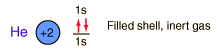

Helium
Helium is the lightest noble gas with two electrons filling the 1s state to close the first shell. It is the second most abundant element in the universe, following hydrogen.
The hydrogen-helium abundance ratio is an important clue to the cosmological process.
On the earth, helium is not abundant, being found only in very small quantities in the earth's atmosphere. It was in fact discovered in the sun by the helium spectrum in 1868, long before it was discovered on the earth.
Helium occurs as a gas entrapped in some uranium minerals, from which it can be liberated by heating. This helium presumably has its origin from alpha decay in the radioactive material. Helium is also present in natural gas from some wells, especially in Texas and Canada, and this is its principal source.
Helium is used for filling balloons and dirigibles. It is mixed with oxygen (heliox) for breathing by deep ocean divers to avoid the "bends" from the nitrogen content of the breathed air.
Liquid helium provides the most practical way to achieve temperatures below 20K for research purposes, and it provides the coolant for achieving superconductivity with the Type I superconductors.
For high vacuum research, helium provides a sensitive way to locate leaks in the vacuum system. A helium mass spectrometer is attached to the vacuum system and then a small jet of helium is released outside the vacuum at locations where leaks are suspected. The detection of helium by the mass spectrometer shows that some is getting into the system, and that the release must be close to the leak.

|